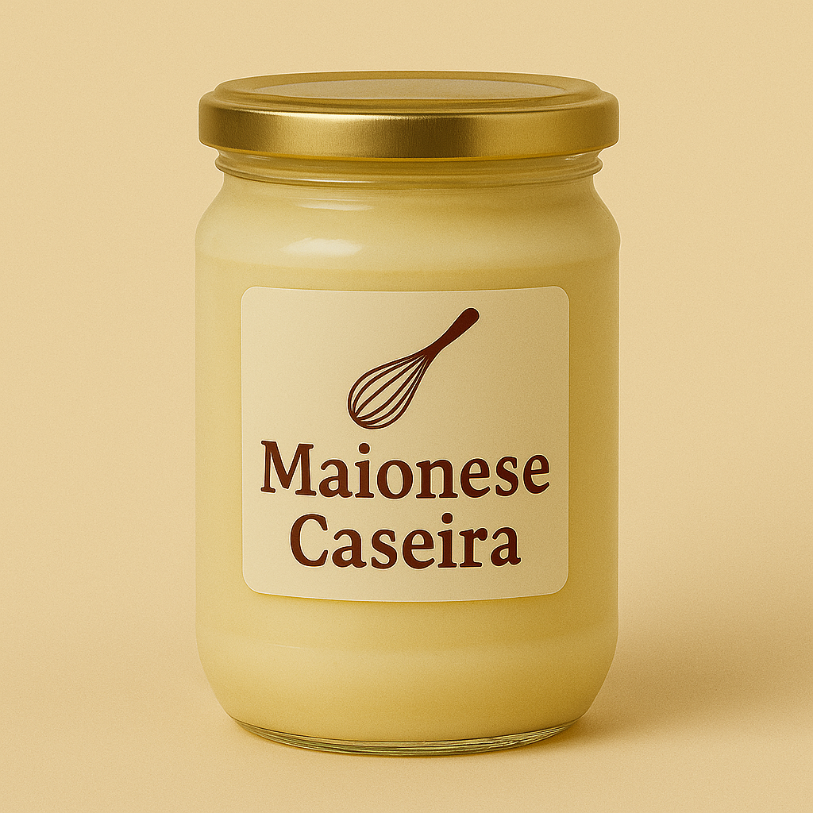

Sabor caseiro com alma de Floripa
Sabor caseiro com alma de Floripa
|  |
Nossa Maionese de Alho é puro carinho em forma de sabor. Feita com ingredientes frescos e selecionados, traz a cremosidade e o gostinho único que só a receita da mãe tem. Perfeita para acompanhar pães, sanduíches ou dar um toque especial aos seus pratos, é como se fosse feita na sua própria cozinha. |